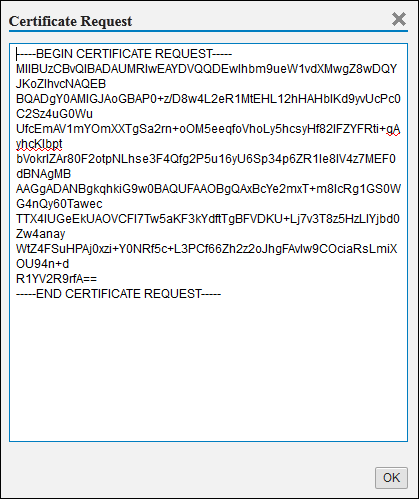

Create your own Certificate
The trust store enables you to maintain a list of servers that you trust; the trust is based on a certificate you import into the trust store and which can be signed by a certificate authority, for example, Verisign or TCTrustCenter.
Prerequisites
Note This feature is
available with restricted releases. If you want to use it, refer to SAP Note
1779803. See the Related Information section for the direct link.
SAP
HANA uses roles to determine the level of access to the features provided by
the SAP HANA XS Administration Tool. To access the tools required to
perform trust manager tasks, you must have the following roles assigned:- sap.hana.xs.admin.roles::TrustStoreAdministrator
Context
You can use the certificates stored in the trust store to secure the communication between trusted servers, for example, with SSL/HTTPS. However, you must also create a certificate that you can use to authenticate the identity of the SAP HANA server, too.
To create your own certificate and import it into your trust store, perform the following steps:
Procedure
-
Create a certificate request.
In the Own Certificate panel, choose
 Certificate Actions
Certificate Actions  Create CA Request
Create CA Request  .
.
-
Import the signed certificate into the trust store.
In the Own Certificate panel, choose Certificate Actions Put CA Response .The imported certificate is displayed in the certificate list.